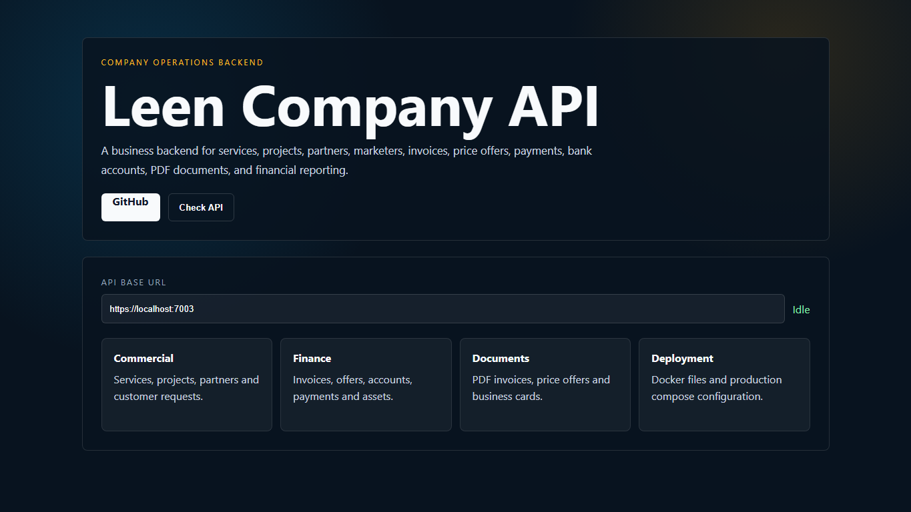
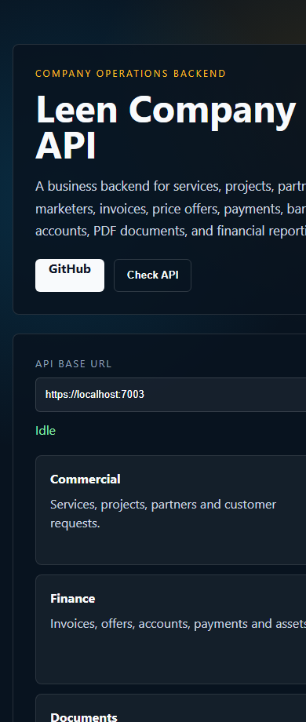
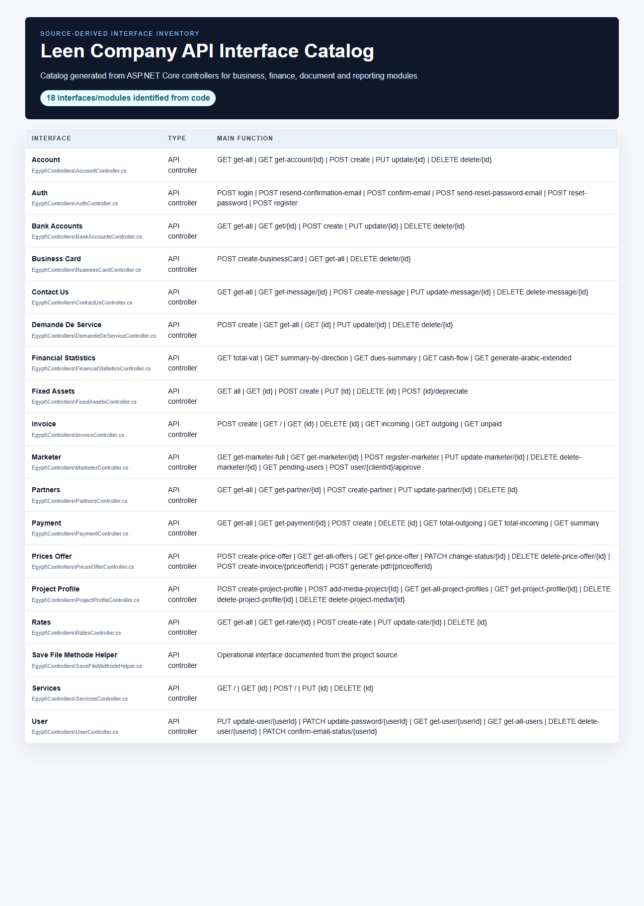

Leen Company API
Business backend
Backend services for services, projects, partners, marketers, invoices, price offers, payments, bank accounts, fixed assets, PDF documents and reports.
1. Contexte du projet
The backend supports a Saudi company platform. The included frontend dashboard is a portfolio/demo interface for explaining API areas and checking a backend URL.
2. Objectifs
- Business content
- Invoices and offers
- Payments
- PDF generation
- Docker deployment files
3. Acteurs
- Administrator
- Client
- Partner
- Marketer
- Accounting user
4. Interfaces et fonctions principales
| Frontend API dashboard | Presents commercial, finance, document and deployment modules. |
| Service/project endpoints | Manage public services, projects and uploaded media. |
| Partner/marketer endpoints | Handle partners, referral/marketer flows and social links. |
| Finance endpoints | Invoices, price offers, payments, bank accounts and fixed assets. |
| Document generation | PDF invoices, price offers, reports and business card outputs. |
5. Technologies utilisees
ASP.NET Core 8Entity Framework CoreSQL ServerDockerQuestPDF/iText
6. Travail en equipe / collaboration
Collaboration project: backend work completed in a team setting with shared responsibility for business, finance and document-generation modules.
7. Captures d'ecran reelles



8. Liens
Repository: https://github.com/tayebzitouni/lenCombany-back
Demo: Frontend preview included in the repository for local presentation.